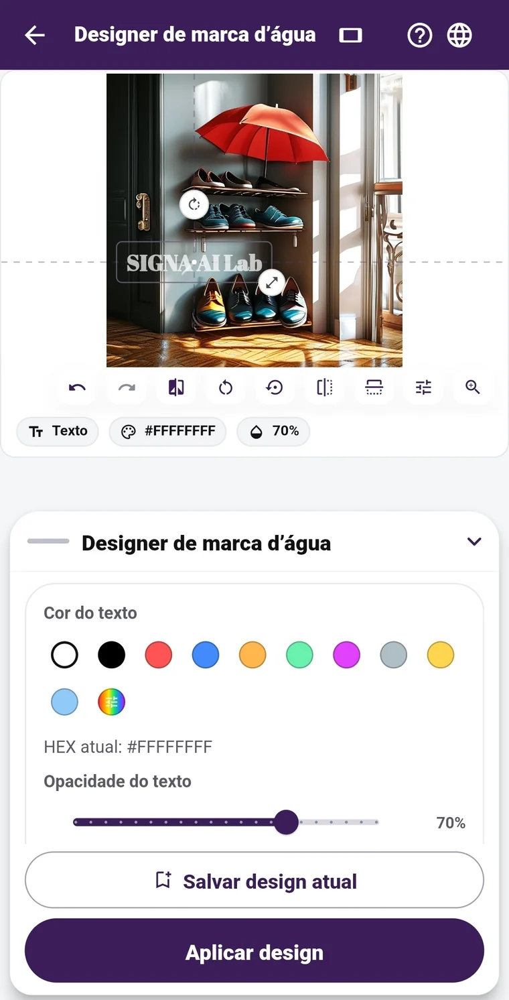

01 · MARCA D’ÁGUA · Marcas d’água grátis, quantas vezes quiser
Marca d’água em até 12 fotos de uma vez
Use uma fonte do app para escrever seu nome ou importe um logo pronto. Dá para criar um com suas iniciais, aproveitar uma foto da sua letra ou desenhar a assinatura na tela. Ajuste a fonte, a cor e a opacidade do texto e acerte a posição e o tamanho em cada foto e salve o modelo para repetir quando quiser. Para usar a marca d’água junto com o sinal invisível, é só ativar a opção do sinal SIGNA.
Uma sugestão de posição para cada foto. O SIGNA indica um ponto de partida para colocar a marca d’água. Você pode ajustar do seu jeito ou desfazer a sugestão.
Fotos na vertical ou horizontal · Até 12 por vez · Posição por foto · Modelos salvos · Mais fontes no Pro
 Veja a tela completa ↗
Veja a tela completa ↗
